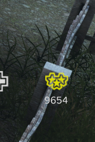
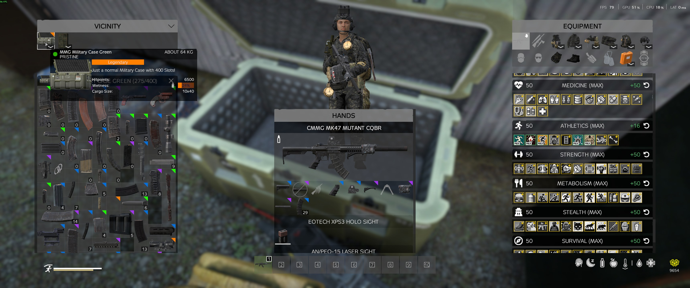

Advanced Topics¶
Once you've mastered the basics of survival, it's time to look at the deeper mechanics of Survivatorium. This guide covers the Reputation system, Player-to-Player trading, and advanced storage solutions.
Table of Contents¶
Reputation System¶
Your Reputation is a measure of your standing on the server. It is a crucial metric that dictates what you can buy and what missions you can undertake.
Earning Reputation¶
- Completing Quests: The primary and most reliable way to earn Reputation. Higher-tier quests reward more points.
- Killing Threats: Eliminating infected, dangerous wildlife, and hostile AI mercenaries will slowly build your standing.
- Events: Participating in server events or securing airdrops can also boost your Reputation.
Losing Reputation¶
- Death: Dying incurs a massive Reputation penalty. This makes survival absolutely crucial for progression. If you die frequently, you will find yourself locked out of high-tier gear.
- Failing Quests: Some quests may penalize you for failure or abandonment.
Reputation Benefits¶
- Quest Unlocks: Some advanced questlines — particularly the PvP kill contracts — require a minimum Reputation standing before you can accept them. Build your rep through hunting, AI elimination, and other questlines first.
- Trader Access: Traders reserve their best weapons, armor, and vehicles for reputable players. If your Reputation is too low, you won't be able to purchase high-end military gear.

Player-to-Player (P2P) Market¶
The P2P Market allows players to trade items directly with each other, bypassing the NPC traders and setting their own prices.
How to Use the P2P Market¶
- Access the Market: Locate a P2P Market terminal (often found in safe zones or major trader hubs).
- List an Item: Select an item from your inventory, set your asking price in Hryvnia, and list it on the market.
- Buy an Item: Browse the listings from other players. If you have enough Hryvnia, you can purchase the item instantly, even if the seller is offline.
- Collect Earnings: When your item sells, the Hryvnia is deposited into your account or can be collected from the market terminal.
P2P Trading Tips¶
- Supply and Demand: Check the NPC trader prices before listing. If an item is rare or out of stock at the NPC, you can charge a premium.
- Undercutting: To sell quickly, price your items slightly lower than the competition.
- Bulk Sales: Selling items in bulk (e.g., stacks of ammo, building materials, or medical supplies) is often more attractive to buyers.
Personal Storage¶
Managing your loot is a critical part of survival. Survivatorium offers several advanced storage options beyond the standard DayZ tents and barrels.
Storage Containers¶
The server offers a variety of high-capacity, visually distinct storage containers to organize your base.
- Gun Racks: Display and store your firearms efficiently.
- Gear Stands: Store clothing, armor, and backpacks so they are ready to grab after a death.
- Lockers & Crates: High-capacity storage for general items, building supplies, and medical gear.
Secure Storage¶
- Code Locks: You can attach Code Locks to tents, barrels, and custom storage containers to secure your loot from thieves. Even if someone breaches your base walls, they will still need to crack your containers.
- Territory Protection: Items stored within your claimed territory are protected by your base's defenses, but remember that bases can be raided!
Storage Limits¶
- Be mindful of server performance. While there are no strict limits on the number of storage containers you can have, excessive hoarding in a single area can cause lag for you and your neighbors.
